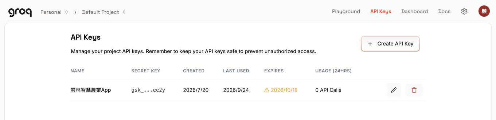
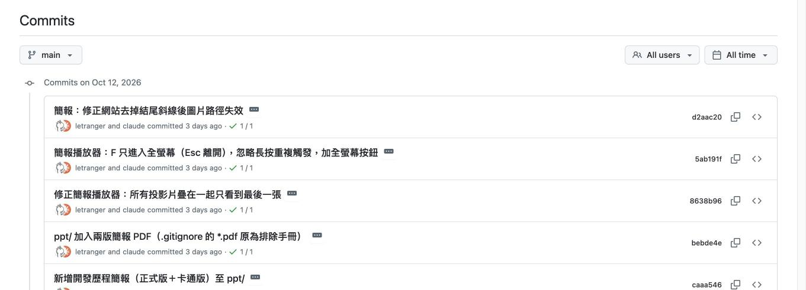
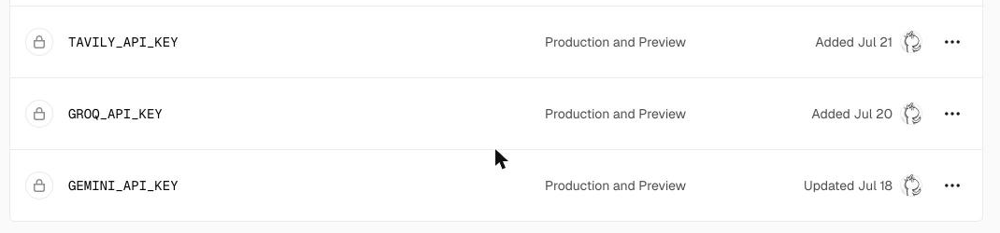
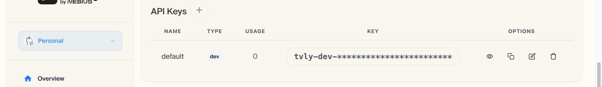

豐泰盃 AI 應用創意實作競賽 · 麥寮高中
溫室植栽專家系統誕生記
一個被丟任務的人 × 一個被從網路上糾出來的 AI
（本故事根據 GitHub 提交紀錄改編，人物表情純屬藝術加工）
登場人物
雲龍師
負責丟任務
永遠覺得「很簡單吧」
我
負責接任務
不太會寫程式
Claude
被從網路糾出來
很累但不得不做
Gemini
負責找資料
體力（額度）有限
Groq
半路殺出的救火隊
負責寫答案
友情客串：Tavily（上網查資料）、GitHub（保險箱）、Vercel（網站房東）
第一幕：天外飛來一張圖

我用 ChatGPT 把 App 畫好了！
你把它做出來，很簡單吧？
老師……這只是一張圖啊……
按鈕根本按不下去……
7 月 6 日 上午 · 概念海報＋五張手機畫面，全是 ChatGPT 生成的圖片
第二幕：把 Claude 從網路上糾出來
網路
Claude！
給我出來工作！
蛤？我才剛回答完一百萬個人的問題耶……
好啦好啦。
7 月 6 日 下午 · Claude Code：會直接在電腦裡寫程式、開檔案的 AI
Claude 硬著頭皮開工
16:12
第一版做好了
20:17
連 iPad 版都做了
順便說：別做 iPhone App。要年費 99 美元、要審查、Android 還不能用。做網頁 App，手機「加入主畫面」就跟 App 一樣！
這麼快？！
你明明說很累……
7 月 6 日 · 畫面和按鈕都是真的，診斷結果先用範例假裝
第三幕：雲龍師又丟來一疊手冊
85 MB！
這 8 本栽培手冊，讓 AI 全部讀懂！
回答還要附第幾頁喔！
85 MB……AI 一次根本讀不完啊……
（只好再去拜託 Claude）
洋香瓜、番茄、小番茄、小黃瓜、甜椒手冊＋3 本英文版
第四幕：可以偷懶嗎？不行。
直接把 GPTs 塞進網頁不就好了？
反正它都讀過了～
官方不給嵌啦！只能自己蓋一座「小圖書館」：
先去書架找到相關段落，再照著寫答案。
這招叫 RAG（檢索增強生成）。
（內心 OS：又要加班了……）
7 月 18 日 · ChatGPT 的 GPTs、Gemini 的 Gem 都不能嵌進網頁，也不能用程式呼叫
第五幕：把手冊剁成 277 塊
① 撈出文字
PDF 每一頁的字抓出來
② 剁成小塊
每塊約 700 字，記住頁碼
③ 變成數字
每塊變 768 個數字（向量）
④ kb.json
277 塊、2 MB，一個檔案搞定
③ 那步我做不到……我沒有「轉向量」的功能。Gemini，拜託你了。
交給我！轉向量免費！
277 塊一塊一塊來～
7 月 18 日 · 意思相近的段落，數字也相近；不用架資料庫，一個 JSON 檔就夠
第六幕：Gemini 累倒了
ERROR 429 generate_content_free_tier_input_tokens
翻譯：寫答案的免費額度，用完了。
找資料……我還行……
寫答案……不行了……
20:53 加上「等一下再重試」……沒用。
20:56 換成額度較寬的 flash-lite……也沒用。
整整卡了兩天！
7 月 18 日晚上 · 我：展示到一半答不出話，超尷尬……
第七幕：救火隊 Groq 登場
新分工表
Gemini：找資料
Groq：寫答案
Tavily：上網查（當晚加入）
太好了，那我
專心找資料就好～
寫答案交給我！
免費、不用綁卡、超快！
7 月 20 日 15:18 · 選項有「開 Google 付費」或「用付費 AI」，預算只有 6,000 元，選了免費的 Groq（Llama 3.3 70B）
第八幕：搬家到網路上
GitHub＝保險箱
放程式碼，每次修改都記下來（共 38 次）
Vercel＝房東
30～60 秒自動上架，還幫忙藏鑰匙
註冊網站全是英文……
只好一直截圖問：「這按鈕在哪？」
記住！AI 的鑰匙絕對不能寫在網頁裡，會被偷！要藏在 Vercel 那一邊。
7 月 6 日起 · 為什麼不用 GitHub Pages？它只能放網頁，鑰匙會曝光
插曲：帳單來了
收 據
GitHub
0
Vercel
0
Gemini
0
Groq
0
Tavily
0
Upstash Redis
0
合計
NT$ 0
0 元
申請這麼多服務……
要花多少錢？
老師，0 元。
全部免費額度，不用綁卡。
計畫經費上限 NT$6,000 · 一毛都還沒動到
幕間：技術幕後大公開
1
拿鑰匙
到 Groq、Google、Tavily 家拿 API 金鑰
2
存保險箱
程式碼送上 GitHub，每次修改留紀錄
3
找房東
Vercel 讀 GitHub 的程式，自動變網址
4
藏鑰匙
鑰匙只放房東那邊，程式碼裡沒有
加碼：上網查資料的 Tavily 怎麼申請、搜到的東西怎麼跟手冊一起交給 AI。
接下來每一張都是真實後台畫面，照著按就能複製。
等等，程式 AI 寫的，
那鑰匙到底怎麼拿？
怎麼上網的？
老師，就這四件事，
我們一件一件看畫面。
技術幕後 1 / 12 · 這段是給「想自己做一個」的人看的
鑰匙 ①：去 Groq 家按門鈴

console.groq.com/keys · 金鑰 gsk_…ee2y，7/20 建立，有到期日
1 登入
Google 帳號，免信用卡
2 按鈕
API Keys → Create API Key
3 取名
「雲林智慧農業App」
4 複製
gsk_ 開頭，只顯示一次！
歡迎光臨！鑰匙免費，
但只給你看一次喔，
關掉視窗就沒了，
趕快貼去 Vercel。
到期要重建一把，再更新 Vercel
技術幕後 2 / 12 · 程式裡的名字：GROQ_API_KEY
鑰匙 ②：Gemini 家，長得一樣

aistudio.google.com/api-keys · 每把只露最後四碼，旁邊寫 Free tier

Create API key → 取名、選專案 → Create key
同一套流程
登入 → Create → 取名 → 複製
會一家就會全部
一個專案一把
名字寫清楚，外洩時
只要刪那一把
我家也一樣：登入、
Create、取名、複製。
我負責找資料，
這把鑰匙額度很夠！
技術幕後 3 / 12 · 程式裡的名字：GEMINI_API_KEY（Tavily、Upstash 也是同一套）
保險箱 ①：把程式送上 GitHub
git init
git add .
git commit -m "初始化 PWA 雛形"
git remote add origin https://github.com/letranger/hami-crop-advisor.git
git push -u origin main

github.com/letranger/hami-crop-advisor · 右邊 About 直接連到正式網站
事前：github.com 註冊、New repository 建一個空的
卡關：第一次 push 問密碼，GitHub 早就不收密碼，要先 gh auth login
我只打一句：
「幫我 commit 並 push」
五行指令我來打，
你看結果就好……
技術幕後 4 / 12 · 第九幕「程式推不上 GitHub」就是這個卡關
保險箱 ②：每次修改都留紀錄

Commits 頁 · 到今天 43 筆 · 作者寫著「letranger and claude」
改好程式
commit＋push
房東 30～60 秒自動上架
手機重整就是新版
中文說明
每筆寫一句做了什麼，三個月後看得懂
綠色勾勾 ✓
房東 Vercel 回報「上架成功」；紅叉＝失敗
看到沒，每一筆都有
我的簽名「and claude」。
推上去房東就自動上架，
不用再按任何東西。
技術幕後 5 / 12 · 「推上去就自動上線」是下一張房東設定的功勞
房東 ①：Vercel 把程式變成網址
1 登入
vercel.com → Continue with GitHub（房東才看得到保險箱）
2 匯入
Add New → Project → 找到 hami-crop-advisor → Import
3 設定
Framework 選 Other；Root Directory 維持根目錄
4 Deploy
一分鐘後得到 hami-crop-advisor.vercel.app

Deployments 頁 · 一筆 commit＝一次上架，7～14 秒，最上面標 Production 的就是正式站
Framework 要選什麼？
清單一大堆英文……
選 Other。我們是純網頁加 api 資料夾，不是什麼框架。
技術幕後 6 / 12 · 匯入時 Vercel 在 GitHub 裝了「通知」，main 一有新 commit 就重新上架
房東 ②：把鑰匙交給房東保管


Settings → Environment Variables · 存進去後只剩鎖頭，連自己都看不到值（正常）
1
進專案 → Settings → Environment Variables
2
Add Environment Variable：Key 填程式約定的名字（GROQ_API_KEY）
3
Value 貼上金鑰 → Save
4
Deployments → Redeploy 一次才生效（我們忘過）
名字要和 .env.example 一模一樣，差一個字母我就讀不到。上半部五個 UPSTASH 是 Storage 連結時自動塞的，手填的只有下面三把。
技術幕後 7 / 12 · 三把手填的金鑰日期 7/18、7/20、7/21，正好是前面申請的那幾天
藏鑰匙 ①：手機只跟自家後端講話
農友手機 app.js
fetch('/api/ask', {question})
誰都看得到原始碼，但沒有鑰匙
房東那邊 api/_rag.js
process.env.GROQ_API_KEY
執行時才從環境變數讀鑰匙
Groq / Gemini
Authorization: Bearer gsk_…
只有這一段才帶鑰匙
✗ 錯誤：寫在 app.js
const KEY='gsk_abc123…';
fetch('https://api.groq.com/…')
按「檢視原始碼」就被拿走，額度刷光
✓ 正確：寫在 api/_rag.js
const k=process.env.GROQ_API_KEY;
if(!k) throw new Error('未設定');
程式碼裡只有名字，值永遠只在 Vercel
鑰匙寫在網頁裡，
等於放在門口地墊下。
這就是不能只用 GitHub Pages 的真正原因。
技術幕後 8 / 12 · 第八幕 Claude 那句「鑰匙絕對不能寫在網頁裡」，就是在講這張
藏鑰匙 ②：三道保險
① 本機用 .env
鑰匙寫在自己電腦的 .env，npx vercel dev 會讀
② .gitignore 擋住
.env
.env.*
!.env.example
③ 只給範本
GEMINI_API_KEY=
GROQ_API_KEY=
TAVILY_API_KEY=
上線前三分鐘自檢
網站按右鍵「檢視原始碼」搜 gsk_、AIza → 要找不到
GitHub 儲存庫搜同樣字串 → 要找不到
真的推上去了 → 立刻去該網站刪掉那把、重建一把；改歷史紀錄沒用
萬一學生不小心
把鑰匙推上 GitHub 呢？
當作已經被看到了。
馬上換鎖：刪舊的、建新的、更新房東那邊。
技術幕後 9 / 12 · .env.example 進版控（只有名字沒有值），讓接手的人知道要設哪幾個
上網查 ①：不是 Google，是 Tavily

app.tavily.com → Overview 往下捲 · 按「＋」建新的、眼睛看全文、複製圖示複製
申請
Google 登入、免信用卡，金鑰 tvly- 開頭
額度
免費每月 1,000 次；問過有快取，用不到
設定
房東那邊加一列 TAVILY_API_KEY，Redeploy
Google 搜尋回傳「給人看的網頁清單」：標題、網址、一小段摘要，AI 要讀還得自己去抓每一頁、清廣告。
Tavily 一次回傳每筆結果的正文片段，程式一行就能貼給模型。Google 自家 Search API 還要綁 Cloud 專案和信用卡。
App 的「上網查」
是接 Google 搜尋嗎？
不是，是 Tavily，專門給 AI 用的搜尋。申請方式跟前面一模一樣。
技術幕後 10 / 12 · 程式裡的名字：TAVILY_API_KEY · 位置 api/_rag.js webSearch()
上網查 ②：手冊和網路一起交給 Groq
① 農友問
「洋香瓜葉子有白粉怎麼辦？」
先查快取，問過直接回
②A Gemini 查手冊（可信、優先）
問題變向量 → 和 277 段比對 → 取最像 5 段，附作物＋頁碼
②B Tavily 查網路（補充、僅供參考）
自動加「台灣 溫室栽培 病蟲害 防治」→ 進階搜尋 → 取 4 筆正文片段
兩邊同時跑（Promise.all）；一邊失敗，另一邊照常
③ Groq 合寫
收到【手冊 1～5】＋【網路 1～4】。規則：手冊優先、每點標出處、沒有就說不知道
④ 一個答案
…噴施碳酸氫鉀（手冊：洋香瓜 第 12 頁）；近年也有農友…（網路：農業知識入口網）
我翻手冊、Tavily 上網，同時出發，誰慢也不等誰。
兩包資料給我，我寫成一個答案，每一點都標出處，手冊優先。
技術幕後 11 / 12 · api/ask.js（並行）＋ api/_rag.js webSearch()、generateMerged() · 答案存快取，下次直接回
上網查 ③：交給 Groq 的那一包
system（規則，程式寫死）
你是台灣溫室栽培的農業專家助理…用繁體中文回答，語氣簡單、步驟清楚。
你會拿到兩種資料：「栽培手冊」（可信，優先）與「網路搜尋結果」（僅供參考）。
1) 優先根據手冊；手冊沒有才引用網路。
2) 每個重點結尾標註依據：（手冊：洋香瓜 第12頁）或（網路：來源標題）。
3) 只根據提供的資料作答，不要杜撰；都沒有就誠實說明，建議諮詢農業改良場。
user（每次查到的，程式組出來）
【栽培手冊】
【手冊1｜洋香瓜 第12頁】白粉病初期於葉面出現白色粉狀…
【手冊2｜洋香瓜 第13頁】…
【網路搜尋結果】
【網路1｜瓜類白粉病防治 - 農業知識入口網】https://kmweb.moa.gov.tw/…
白粉病好發於…
問題：洋香瓜葉子有白粉怎麼辦？
RAG 三個字的本意：Retrieval 我們查 → Augmented 貼給它 → Generation 它寫。搜尋是程式做的、資料是程式貼的、信任順序是程式規定的，模型只負責用白話整理。
我不會上網喔！
你們查好貼給我，
我只負責整理成白話、
標出處。
技術幕後 12 / 12 · 最多人誤會的地方：不是「請 AI 上網查」，是「我們查好貼給 AI」
第九幕：除錯地獄
有人拍了自己的臉
系統居然認真給出病害診斷
修：綠色太少，就請你重拍植物（8/11）
明明改好了，手機還是舊版
App 一直讀手機裡的舊快取
修：改成有網路就先抓新版（7/23）
程式推不上 GitHub
GitHub：「密碼？我們早就不收了」
修：改用專用的通行憑證
手機上定位、天氣出不來
原來是沒按「允許」
修：到設定打開定位權限
又、是、我？
截圖拿來吧……
7 月 20 日 → 8 月 14 日 · 每個 bug 的解法都一樣：截圖給 Claude，問它為什麼
第十幕：雲龍師驗收
改到老師滿意為止
7/20 全站字放大，按鈕也放大
7/20 畫面上的英文全部拿掉
7/20 拍照、症狀診斷放首頁最上面
7/21 查手冊＋查網路合成一顆按鈕
7/23 拿掉重複的分頁，入口只留一個
8/14 大字版手冊＋安裝 QR code
字太小！英文看不懂！
按鈕找不到！農友不會用啦！
改……我改……
對農友來說，「看不懂」和「找不到」也是 bug
大結局（暫時）
想清楚 → 做出來 → 放上去 → 卡住就問 → 修好再繼續
下一集：拍照辨識和感測器也要真的！
老師……
（現在還是示範版）
下次……手冊可以
先一起給我嗎？
謝謝收看 · hami-crop-advisor.vercel.app